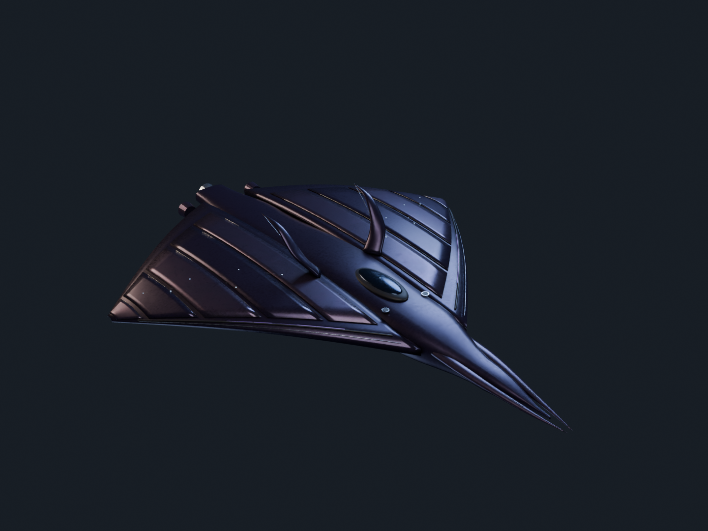
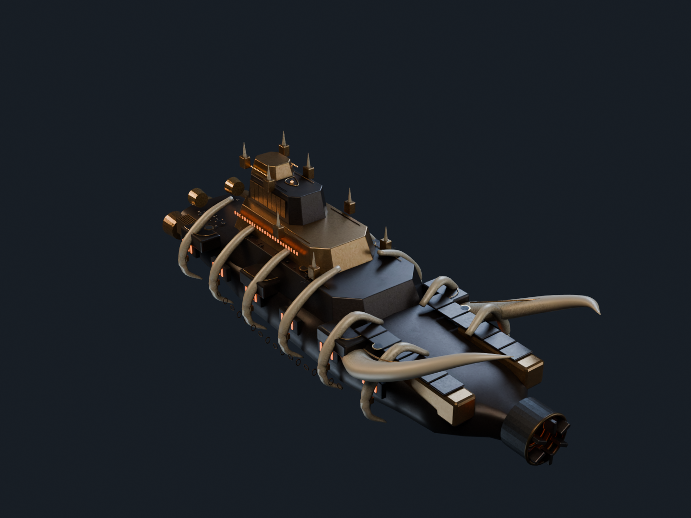
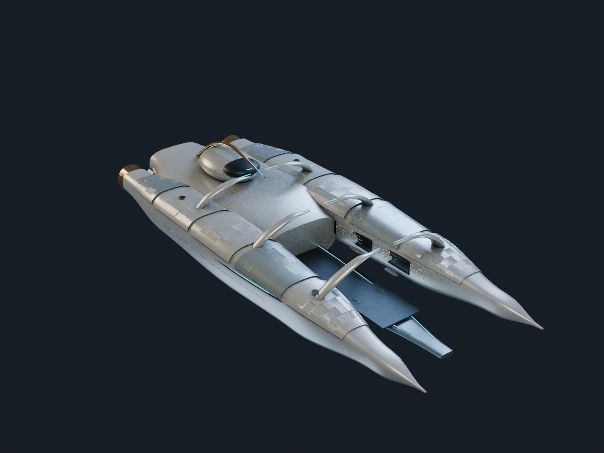

A shadow. A siege altar. An open hand. Three original Blender ships, built for three different civilisations.
CAELORYNTH'S FIRST SHIP COLLECTION COMMISSIONED BY MACKENZIE CONOR JAMES CLARK LOCAL PREVIEW · NOVEMBER 2026

01 / COSMIC DARKNESS075 M
Nightglass
A long split optical lance disappears beneath a folded violet mantle. Silver reference stars trace the instruments across its wings; almost everything else stays dark.
RECONNAISSANCE FRIGATE2 HARDPOINTS · 3 DRIVES

02 / PAGAN AI3,000 M
Cinder Cathedral
A stepped bronze citadel rides inside ivory buttresses. Its forward siege crown rises over a deeply recessed furnace throat. Heat and weight dictate every exposed surface.
SIEGE DREADNOUGHT6 HARDPOINTS · 5 DRIVES

03 / SOL SYMBIOTS3,200 M
Open Hand
Two porcelain shells shelter an open flight bay beneath protective arches. Cyan neural channels follow their curves; tiny amber habitation windows establish the carrier's scale.